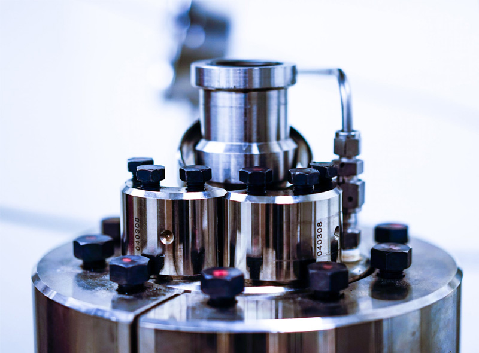
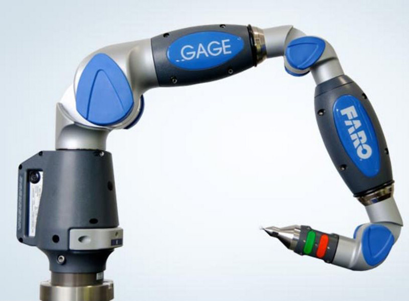
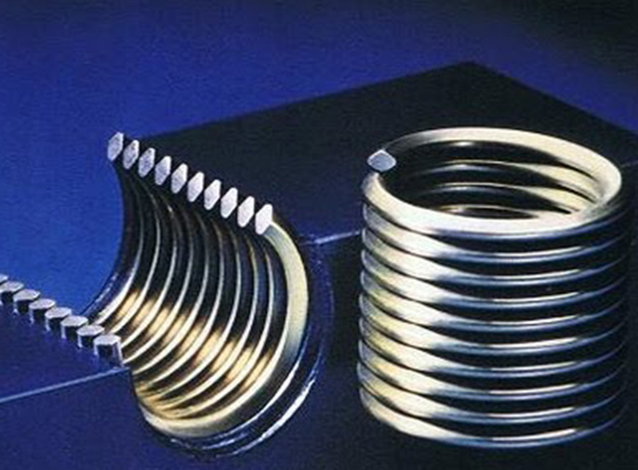
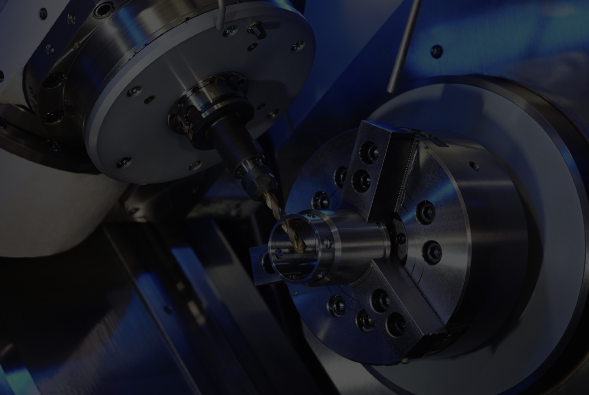

BUSINESS GALLERY
Made for the application.
Explore the work, equipment and possibilities. Discuss what you have in mind with the team.
7 photographs

Machining
Precision machined components ↗

Inspection
FARO Gage measurement arm ↗

Finishing
Threaded wire inserts pictured on the official website ↗

Machining
Machining equipment pictured on the official website ↗
Aerospace
Aircraft illustrating aerospace applications ↗
Motorsport
Engine components illustrating motorsport applications ↗
Medical